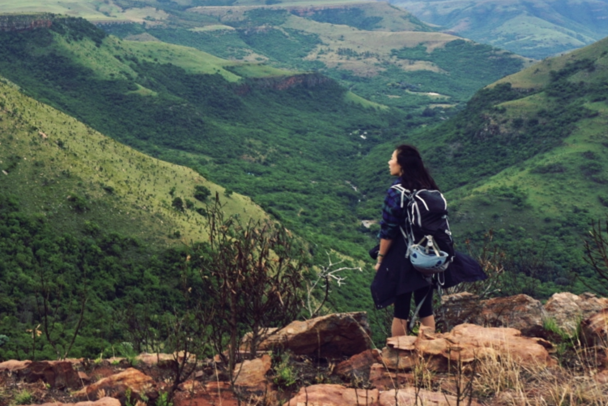

South Africa Climbing Trip
During my junior year winter break, I had the wonderful chance to go on a climbing trip sponsored by Dartmouth’s “Schlitz” adventure fund. I spent 3 weeks hiking, camping, road tripping, and climbing along the coast of South Africa with Catherine, Matt, and Sheppard. From leading a 5.11c to stumbling upon a man's (massive) marijuana farm, to huddling inside a tent during the mother-of-all thunderstorms, to being confronted by the reality of a country's racial and social divide and experiencing firsthand what it meant to have a severe water shortage, this adventure ended up being so much more than just a climbing trip. It was as much a lesson in the extent of my American privilege as it was a journey through the most beautiful, breathtaking parts of South Africa, and I'm so grateful to have experienced all of this with three wonderful, thoughtful friends.
Interested in climbing in South Africa?
Check out our beta
Trip Video and Reflections
I shot this video on an iPhone 6 and edited with Premier Pro for the first time. While I had done some video editing before with iMovie, I wanted to push myself to create something better with more sophisticated software. I learned quite a bit about film editing and will definitely try to make some more trip videos going forward, hopefully with a better camera! (narrator: she still has not gotten a camera). Most of the footage was captured for fun without the intention of turning the clips into a film, so I'm hoping that being more intentional about the shots will create better results in the future (narrator: and she still has crap footage). All that being said, I ended up submitting this project to our school’s Moosilauke Film Festival, and it came in first woohoo!
Previous Adventure
Journey Back to the Ice